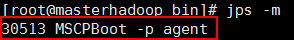
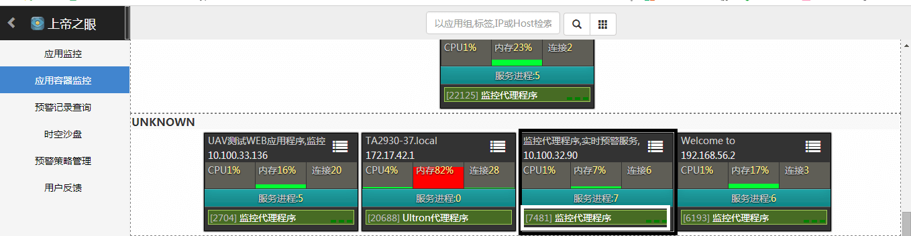

启动与停止
启动
在uavagent/bin目录下，启动MA.
cd uavagent
sh bin/start.sh 网卡名 JDK路径
- 当宿主机有多个网卡或虚拟网卡时，主机会有多个IP，MA启动时通过网卡名的方式来指定IP，可以通过ifconfig命令来查看网卡名和IP的对应关系。
- 如果本机JAVA环境jdk版本为1.7以上的版本，则无需配置，否则需要在该命令后配置jdk路径。
通过jps命令可查看MA是否启动。

在AppHub上帝之眼查看MA是否工作正常。

cd到../uavagent.metadata/logs查看启动日志，若无error信息，则启动成功.
停止
MA启动时，会在用户crontab中加入值守脚本。若直接kill进程，MA会自动重启。如需停止MA,执行以下命令：
sh bin/stop.sh
若调用stop.sh后进程仍未停止则kill进程即可。